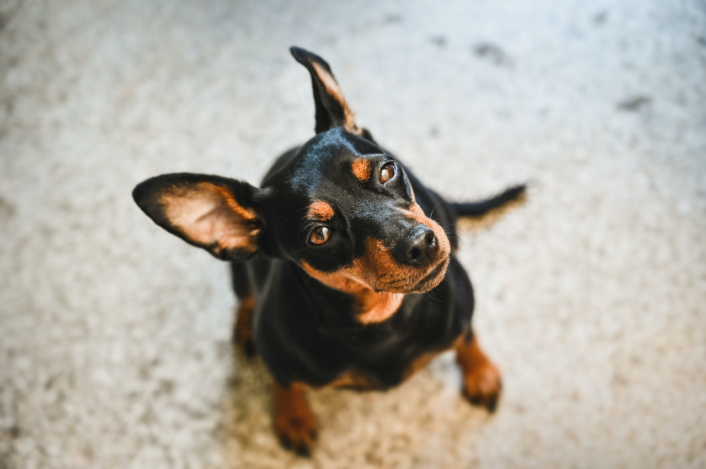
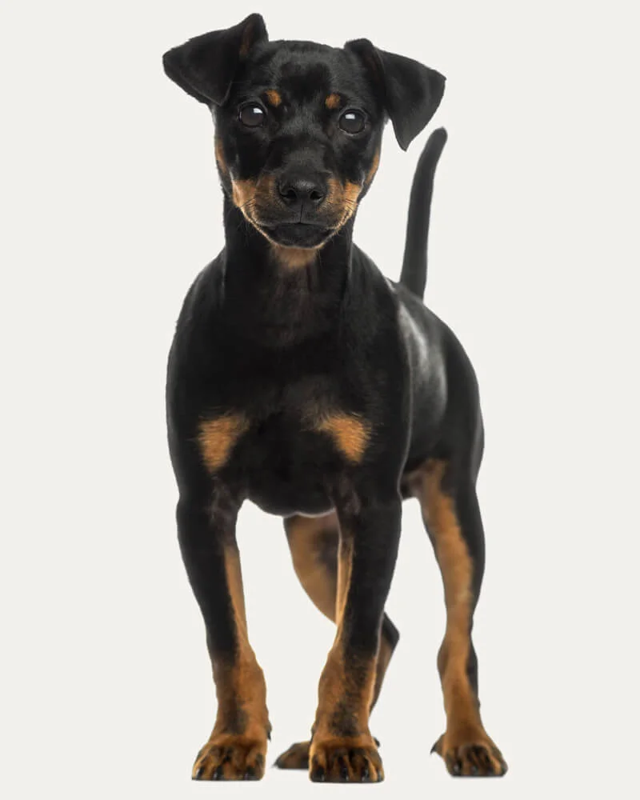
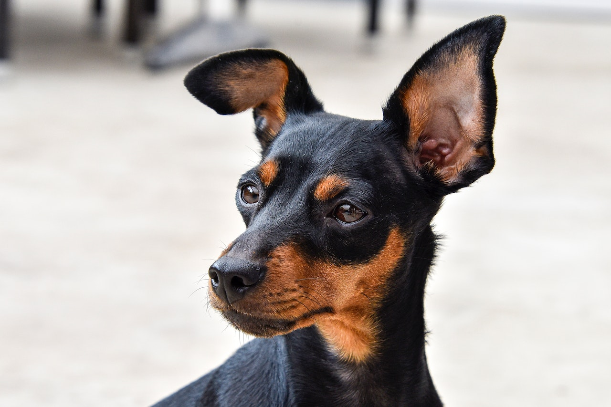
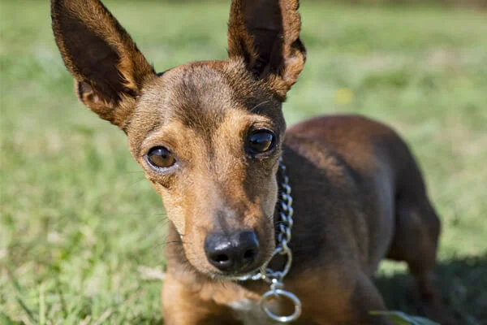
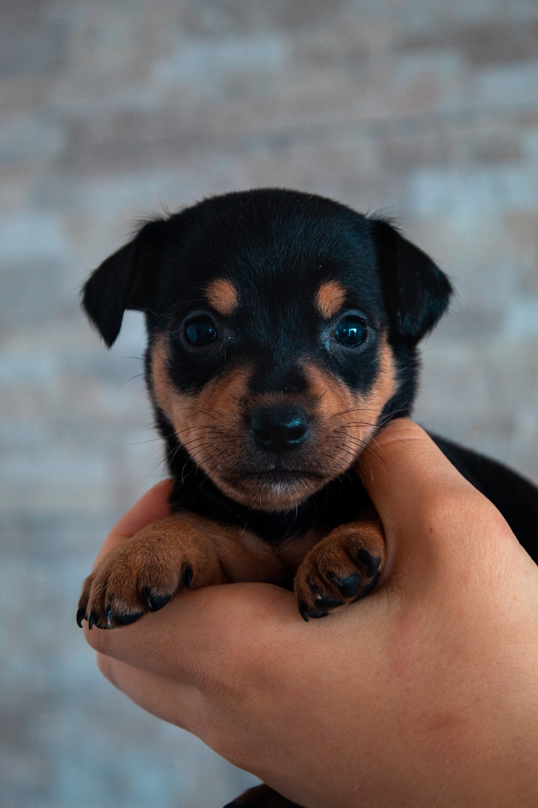

O Pinscher segue a risca a expressão popular “tamanho não é documento”. Conhecido pela sua energia inesgotável e seu latido, o cãozinho de – no máximo – 30 centímetros, demonstra toda a sua braveza quando percebe algo de errado ao seu redor. Diferente de outras raças de pequeno porte, o Pinscher é um excelente guardião. Seus grandes olhos escuros estão em alerta a todo momento. Mesmo que seja a escolha de muitos moradores de apartamentos e casas compactas, o pet adora espaço para correr e gastar toda a sua energia.
Pinscher
Energia é seu
sobre nome

A disposição que os pinschers possuem vão contagiar todos ao seu redor.
Condição Fisica
Apesar do tamanho pequeno dos cachorros da raça Pinscher,eles possuem um temperamento marcante: são ousados, Apesar do tamanho pequeno dos cachorros da raça Pinscher, eles possuem um temperamento marcante: são ousados, corajosos, curiosos e extremamente apegados às pessoas que convivem junto com eles.

Características
expectativa de vida
15
anos
média de peso
6kg

Média de altura
30 Cm
Nível de fofura
Alto
É adaptável?
Requer atenção?
Apartamento?

Late muito?
Gosta de gatos?
Gosta de crianças?
Gosta de cães?
Precisa exercitar?
É espaçoso?
Fácil tosar?

Problemas saúde?
É inteligente?
É Gosta de brincar?
Cai muito pelo?
É sociável?
É amigavel?
É territorialista?
Fácil de treinar?
É cão de guarda?
É friorento?
É calorento?
Características fisícas
O Pinscher é reconhecido pelo seu tamanho pequeno e sua pelagem curta, lisa, densa e brilhante. Para evitar a queda de pelos por toda a sua casa, escove diariamente o seu pet com acessórios específicos para a raça. A pelagem pode ser unicolor: vermelho cervo ou vermelho castanho. Ou bicolor: preto e castanho.
Compacto, o Pinscher possui um crânio achatado. A arcada dentária afiada é em formato de tesoura. O focinho, preto, é pontudo. As orelhas são pontudas e dobradas. Os olhos ovais são escuros e sempre em alerta. O cãozinho, em sua vida adulta, pode ter de 25 até 30 centímetros e com o peso entre 4 e 6 quilos.
Destaque e curiosidade
temperamento do pinscher

O temperamento do Pinscher vai variar do treinamento e da socialização que o seu companheiro for submetido desde filhote. Geralmente eles costumam latir para estranhos ou em situações que eles consideram de risco, mas essa é uma característica de cão guardião que ele possui. No fundo eles são amorosos e adoram brincar com os seus tutores.
popularidade
As telinhas nunca foram o forte do Pinscher. Porém, esse fator não diminuiu nem um pouco a popularidade da raça. O cãozinho está entre as raças favoritas na Europa, Estados Unidos e aqui no Brasil também.
artes
O Pinscherjá fazia sucesso há mais de 300 anos. Historiadores encontraram em pinturas do século 17 cãezinhos que se assemelhavam ao Pinscher Miniatura. Já, no século 19, mais pinturas com o pet foram localizadas. Comprovando que seu sucesso é de longa data.

historia do pinscher
origem
Apesar de possuir muitas semelhanças, o Pinscher não é uma miniatura do Doberman, uma vez que o cãozinho é mais velho que seu primo maior. Sem muitos vestígios do seu surgimento, especialistas consideram a Alemanha como país de origem da raça. No início, por conta do seu tamanho compacto, o cãozinho se destacou por ser um exímio caçador de roedores.
nome de batismo
Extremamente popular na Alemanha antes da Primeira Guerra Mundial (1914-1918), com o fim da batalha houve uma drástica redução da raça no país. No entanto, a essa altura, alguns criadores norte-americanos já contavam com alguns Min Pins— apelido da raça. No Reino Unido e na França o cãozinho chegou a partir de 1950.
ofícios
O Pinscher Miniatura era chamado apenas de Pinscher (Toy) na América até em 1972, quando recebeu seu novo nome de batismo – esse que conhecemos hoje em dia. Já, na Alemanha, seu país de origem, o pet é ganhou a alcunha de Zwergpinscher, que significa nada mais, nada menos do que anão mordedor.
o popular
Com muitos seguidores na Europa e nos Estados Unidos, aqui no Brasil a fama do cãozinho não é diferente. Entre os mais populares no país, o Pinscher fica atrás apenas do Shih Tzu e Poodle, completando o ranking das raças favoritas dos brasileiros.
Personalidade
O Pinscher é dono de uma personalidade forte. E os cãezinhos dessa raça são conhecidos por serem, principalmente, destemidos e estarem sempre em alerta. Apesar do pouco tamanho, é comum ver o pet partindo para cima de outros cães, quase sempre maiores que eles, quando se sentem ameaçados.
A lealdade ao seu tutor também é outra característica da personalidade marcante desse pequeno cão de guarda. O cãozinho sempre estará como um guardião para tentar protegê-lo — mesmo que você não esteja correndo nenhum risco.
Personalidade que tem exceções à regra e que é importante sempre trabalhar socialização e adestramento de forma correta.
Convivência
A energia presente no Pinscher dá a ele uma expectativa de alta interação com seu tutor. Mas, quando não é correspondido, o cãozinho fica desanimado e um um tanto quanto irritado. Portanto, é muito importante que o tutor dedique um tempo do seu dia para realizar brincadeiras com seu pet!
Já a interação com outras raças ou outras espécies de animais, como gatos, não é o ponto forte do Pinscher. Para que o tutor não tenha problemas de convivência com seus cãezinhos e os outros pets, é muito importante existir uma interação desde filhote.
socialização
Assim como a relação com outros pets, à primeira vista, o Pinscher não se mostra tão amigável com estranhos ou crianças. Porém, não há segredo. Com uma socialização do cãozinho desde cedo, essa questão será resolvida rapidamente.
Muito brincalhão, realizar diversas brincadeiras com o pet pode ser uma das formas mais simples de socialização do animal com outras pessoas. Caso o seu cãozinho apresente dificuldades, é importante contar com um profissional para auxiliar no treinamento de interação.
Saúde e bem-estar
escovação dos pelos
Alguns cuidados são necessários para uma boa higiene do Pinscher. Quando for dar banho no cãozinho, opte sempre por itens específicos para cachorros. O uso de produtos de humanos possuem substâncias que não são benéficas para a saúde do pet.
É importante que os itens do cachorro, como a casinha ou sua caixa de transporte, sejam limpos. O tutor também deve estar atento à higienização de outros acessórios como os lençóis favoritos do cãozinho e brinquedos de pelúcia, que sujam com o tempo.

higiene
Alguns cuidados são necessários para uma boa higiene do Pinscher. Quando for dar banho no cãozinho, opte sempre por itens específicos para cachorros. O uso de produtos de humanos possuem substâncias que não são benéficas para a saúde do pet.
É importante que os itens do cachorro, como a casinha ou sua caixa de transporte, sejam limpos. O tutor também deve estar atento à higienização de outros acessórios como os lençóis favoritos do cãozinho e brinquedos de pelúcia, que sujam com o tempo.
Dentes
Lembre-se também de escovar os pequenos dentinhos do Pinscher. Esse processo irá proteger a saúde bucal do animal e mantê-lo saudável. Caso tenha dúvidas de como realizar essa tarefa e de quais produtos utilizar, é legal consultar o médico veterinário responsável pela saúde do seu cãozinho.
Unhas
Unhas Outro processo para se atentar na higiene do animal é com relação as unhas. É ideal que o tutor repare no tamanho das unhas do pequeno e corte sempre que preciso para que o cãozinho não se machuque sozinho ao se coçar.
Cuidados com a saúde do Pinscher
Os animais, assim como os humanos, podem contar com problemas de saúde. Para que isso não ocorra com o seu pet, é ideal visitar regularmente um especialista e ficar atento nos problemas de saúde que geralmente afetam a raça.
No caso do Pinscher, todo o seu vigor dá ao cãozinho um status de animal extremamente saudável. Porém, o problema mais comum nesses pets ocorre também em cães menores de outras raças: a luxação patelar, causada quando a patela não está alinhada e gera dificuldade para o pet caminhar. No tratamento pode ser necessário a realização de cirurgia para a correção.

alimentação
Por ser um animal extremamente agitado, é fundamental o tutor se preocupar com a alimentação do seu Pinscher para que ele tenha refeições saudáveis e possa repor suas energias diariamente.
Para isso, descubra aqui na Petz qual a melhor ração para Pinscher. Contamos com parceiros que oferecem rações saborosas e saudáveis para todas as idades e condições do seu cãozinho.
Acompanhamento
O acompanhamento veterinário é fundamental para que seu cãozinho cresça saudável e feliz. O especialista irá te auxiliar em possíveis problemas que apareçam durante a vida do pet e recomendar alimentos mais nutritivos e ideais para o seu Pinscher.
Mesmo que, aparentemente, seu companheiro não apresente problemas, é importante visitar periodicamente o profissional para que ele faça avaliações e, se necessário, indique mudanças na rotina do pet.
Filhotes

Desde filhotes os cãozinhos já são ativos e precisam gastar toda a energia que possuem. No entanto, o tutor precisa estar atento para que esses pequeninos não se machuquem enquanto estão se divertindo.
Além disso, o seu tamanho, quando filhote, exige atenção redobrada do seu tutor para que ele não escape por qualquer brecha que encontrar!
Dicas de adestramento
Sobre a raça
É extremamente importante o tutor iniciar o processo de adestramento do seu Pinscher ainda filhote. Por ser um cãozinho valente, mesmo que pequeno, ensiná-lo a se socializar com outras raças poderá evitar futuros conflitos ao pet.
As recompensas dadas aos animais durante esse processo não podem ser exageradas. Nessa fase, é recomendável contratar um profissional para que atue, junto com o tutor, para que o cãozinho se torne obediente.
Truques
Durante o adestramento, é muito comum a utilização de brinquedos interativos para ajudar. Escolha itens que simulem uma forma de jogo para o cãozinho. Para que o cãozinho aprenda truques como dar a patinha, rolar ou sentar quando o tutor pedir, o uso de petiscos — sem exagerar — é uma forma de recompensá-lo.